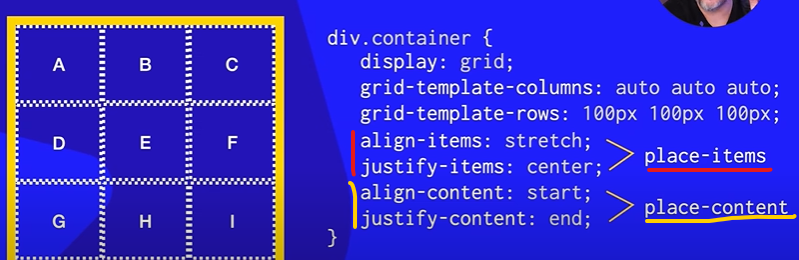
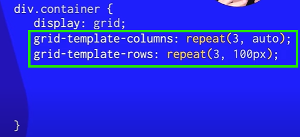

Na imagaem abaixo foi criado apenas tres linhas e tres colunas a letra J foi criada depois e como nao tem espaço para ela ela fica dessa maneira pois se torna um item implicito e vai ficar do tamanho do conteudo e nao igual aos outros.
Para resolver isso usamos o Grid-auto-row para quando for adicionada uma nova linha ela ficar igual as demais :
Seguindo a mesma linha de raciocinio so que agora de acordo com as colunas, se criar uma coluna nao explicitada ela ficara dessa forma .
Se Voce quiser que caso seja criado uma quarta coluna ela fique do tamanho das demais utiliza o Grid-auto-column
Serve para simplificar o align e justify itens e p align e justify content:.

Valores simplificados em uma unica declaração :
Serve para simplificar o Grid-template-columns e o rows, obs: na declaração o valor do rown vem primeiro no caso da imagem os 100px.
Valores simplificados em uma unica declaração :
Usando o repeat você simplifica valores iguais como no exemplo abaixo:

Função Grid-template + Função repeat:simplificando as funçoes grid em uma unica declaração e seus valores
A unidade fr significa fração do espaço disponível. Você usa fr para dividir o espaço restante entre colunas ou linhas de um grid
Como funciona:
A área total disponível será dividida em 4 partes (1 + 2 + 1).
A primeira coluna(A) recebe 1 parte (25%)
A segunda coluna(B) recebe 2 partes (375 + 375 = 750px)(50%)
A terceira coluna(C) recebe 1 parte (25%)